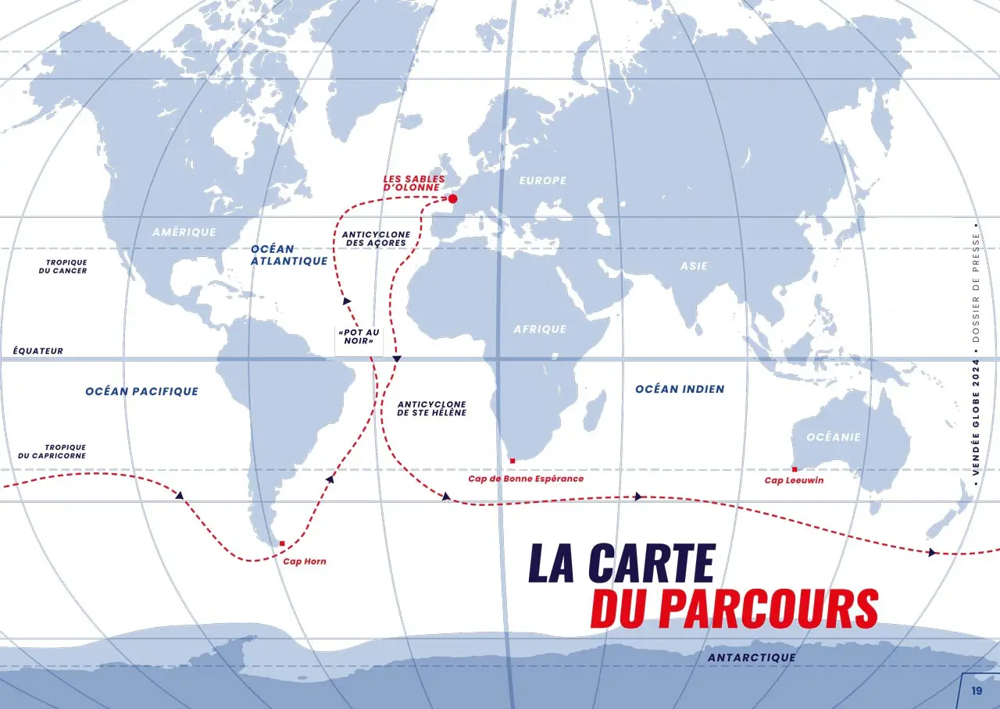

Le départ a lieu aux Sables-d'Olonne, en France, et les skippers naviguent d'abord vers le sud, traversant l'Atlantique avant de contourner les trois caps mythiques : Bonne-Espérance, Leeuwin et Horn, dans l'océan Austral. Ils remontent ensuite l'Atlantique sud pour revenir aux Sables-d'Olonne. Cette course, réputée pour ses conditions extrêmes et sa durée (entre 70 et 120 jours), met les navigateurs face à des défis techniques, stratégiques et physiques immenses. Elle est un véritable test d'endurance et de résistance mentale.
